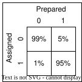

Readout Correction
Quantum state readout is never 100% perfect. Readout errors refer to the incorrect assignment of the measured quantum state. This can be due to:
Inherent noise (e.g. Johnson noise, technical amplifier noise, shot-noise from photons in the readout resonator)
Thermal photons flipping the qubit state during readout
State decay during measurement (i.e. a \(T_1\) event)
In some experiments like state tomography, the ensemble average of the population probabilities is required over the individual single-shot states. In such experiments, one may correct the populations by using calibrated statistics.
Basics
For a given qubit, the core idea is to first take single-shot statistics for different initialisations (in this example, taking two states 0 and 1) to create an assignment matrix:

Example readout assignment matrix
In this typical example, the ground state is assigned correctly with a high probability of 99%, while the excited state is only assigned correctly 95% of measurement shots due to state decay. Note that the readout fidelity is typically defined as the average of the correct assignments (in this case (99+95)/2=97%). The idea is that the measured population probabilities \(P_{meas}\) is given by multiplying this assignment matrix \(M\) with the actual population probabilities P_{real}:
Thus, one can correct for the populations by simply taking the inverse: \(P_{real}=M^{-1}P_{meas}\). SQDToolz stores this as a qubit attribute CorrectionMatrix.
Probability Correction
A small subtlety is that multiplying the inverse matrix with the measured probabilities may yield an invalid probability vector. That is, vector \(\mathbf{x}\in\mathbb{R}^N\) vector is a valid probability vector if:
All entries are non-negative: \(\mathbf{x}\geqslant0\)
All entries sum to 1: \(\sum_i x_i=1\)
This clearly defines a constrained hyperplane - i.e. a simplex (a convex polygon in this case). In 3D, this is a triangle. One simply needs to find the closest point on this simplex to project the given probability vector onto a valid probability vector. A calculation using Lagrange Multipliers and the Karush-Kuhn-Tucker conditions yields the following algorithm to project the vector \(\mathbf{x}_0\) onto a valid probability simplex:
Sort \(x_{0(m)}\) in descending order
Then incrementally test to the last \(K\) that satisfies: \(x_{0(mK)}-\tfrac{1}{K}(\sum_{P=1}^K(x_{0(mP)})-1)>0\)
Calculate: \(\lambda=\tfrac{2}{K}(\sum_{P=1}^K(x_{0(mP)})-1)\)
Obtain: \(x_i=\max(0,x_{0(i)}-\tfrac{1}{2}\lambda)\)
The utility function sqdtoolz.Utilities.Miscellaneous.Miscellaneous.project_vector_to_probability_simplex() implements this algorithm.